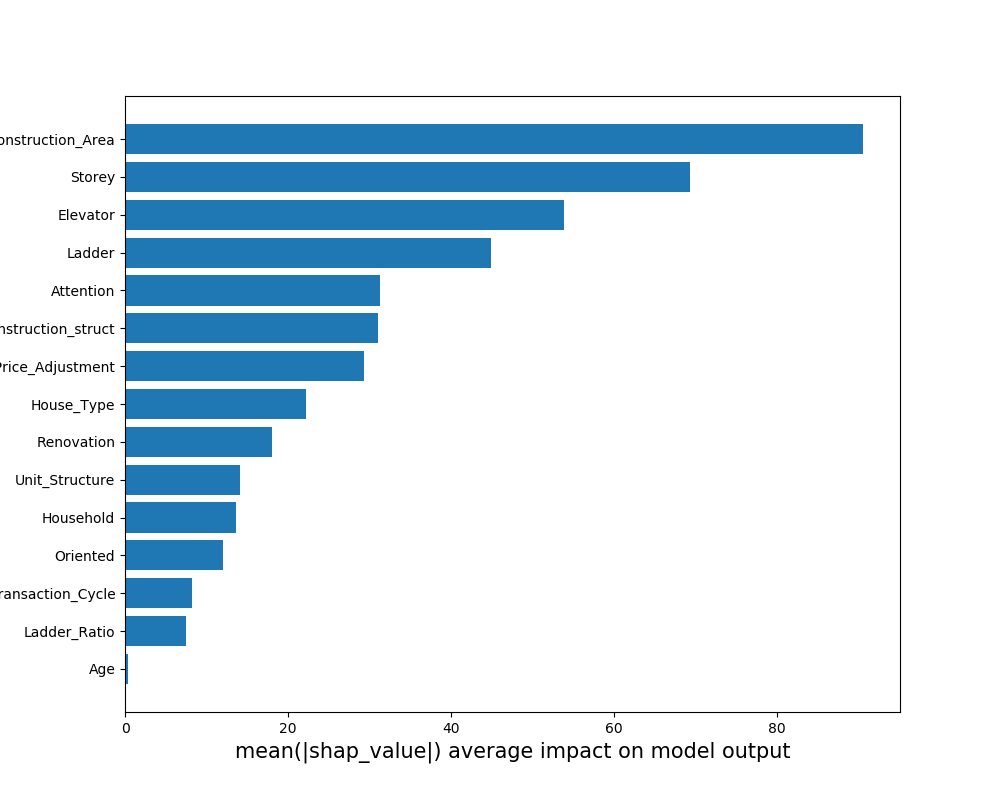
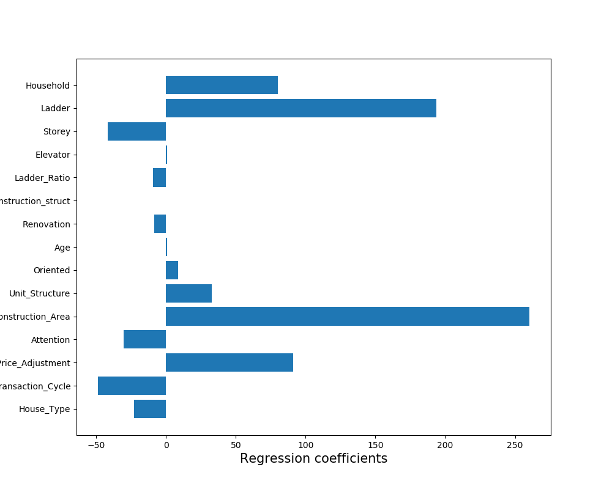

模型分析
模型分析模块的功能：对模型预测结果提供可解释。
从以下两个角度出发：
- Shapley：将模型对于样本的预测解释为每个特征对预测结果的贡献值之和，每个特征对预测结果的贡献值可表示为：
$$ f\left( { X }{ j } \right) =E\left[ f\left( z \right) |z={ X }{ i },i=1,2,...,j \right] $$
- 全局线性替代模型：训练的模型为黑盒模型，难以直接让人理解，使用简单的线性模型来逼近该模型，从而让人理解它的预测结果。
Shapley
Shapley模块返回各个特征对各个样本的平均Shapley值，以及各个特征对每一个样本的预测结果贡献图。Shapley值的绝对值越高代表该特征对模型预测结果的影响越大。
关键代码块如下：
import shap
import numpy as np
def shapley(model,X):
'''
params:
model:模型
X:训练该模型的训练集
return:所有特征对所有样本的平均Shapley值
'''
explainer = shap.TreeExplainer(model)
shap_values = explainer.shap_values(X)
shap.force_plot(explainer.expected_value, shap_values[0,:], X.iloc[0,:])
shap_mean=np.mean(abs(shap_values),axis=0)
return shap_mean
结果如下：

全局线性替代模型
全局线性替代模型返回各个特征的回归系数，回归系数的绝对值越大，代表该特征对模型预测结果的影响越大。
关键代码块如下：
from sklearn import Linear_model
import numpy as np
import pandas as pd
def globalsurrogate(testdata,model,X):
"""
params:
testdata:该模型的测试集
model：模型
X：该模型的训练集
"""
price=model.predict(testdata)
coef_list=[]
data = getData(userData_pred=price[0], X=X)
X_=data.drop(['Final_Price','Label'],axis=1)
y=data['Final_Price']
g=linear_model.LinearRegression(fit_intercept=False)
g.fit(X_, y)
coef_list.append(g.coef_)
return coef_list
def getData():
"""
功能：获取与预测结果一档的对应的子数据集
"""
结果如下：
